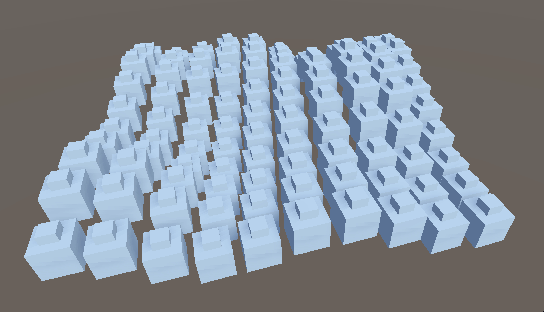
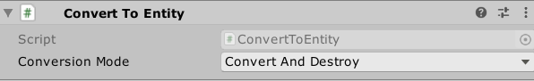

1.通过预制体创建entity
using Unity.Entities;
using Unity.Mathematics;
using Unity.Transforms;
using UnityEngine;
public class Spawner_FromMonoBehaviour : MonoBehaviour
{
public GameObject Prefab;
void Start(){
var settings = GameObjectConversionSettings.FromWorld(World.DefaultGameObjectInjectionWorld, null);
var prefab = GameObjectConversionUtility.ConvertGameObjectHierarchy(Prefab, settings);
var entityManager = World.DefaultGameObjectInjectionWorld.EntityManager;
for (var x = 0; x < 100; x++)
{
for (var y = 0; y < 100; y++)
{
// Efficiently instantiate a bunch of entities from the already converted entity prefab
var instance = entityManager.Instantiate(prefab);
// Place the instantiated entity in a grid with some noise
var position = transform.TransformPoint(new float3(x * 1.3F, noise.cnoise(new float2(x, y) * 0.21F) * 2, y * 1.3F));
entityManager.SetComponentData(instance, new Translation {Value = position});
}
}
}
}

2.ConvertToEntity组件
为节点添加ConverToEntity组件，ecs系统会自动将该节点在运行时转换为实体

3.Convert Callback
//需要ConverToEntity组件
[RequiresEntityConversion]
public class Spawner : MonoBehaviour, IConvertGameObjectToEntity
{
public void Convert(Entity entity, EntityManager dstManager, GameObjectConversionSystem conversionSystem)
{
var data = new CustomData();
dstManager.AddComponentData(entity, data);
}
}